Die Obstküche der Genussmanufaktur
Einmal die
Theke entlang.
Frozen Yogurt, Bubble Waffles, Müslibecher, Smoothies und mehr. Alles frisch gemacht. Schubs das Obst an und tipp auf das, was dich anlacht.
Scrollen: die Theke zieht vorbeiNach unten scrollen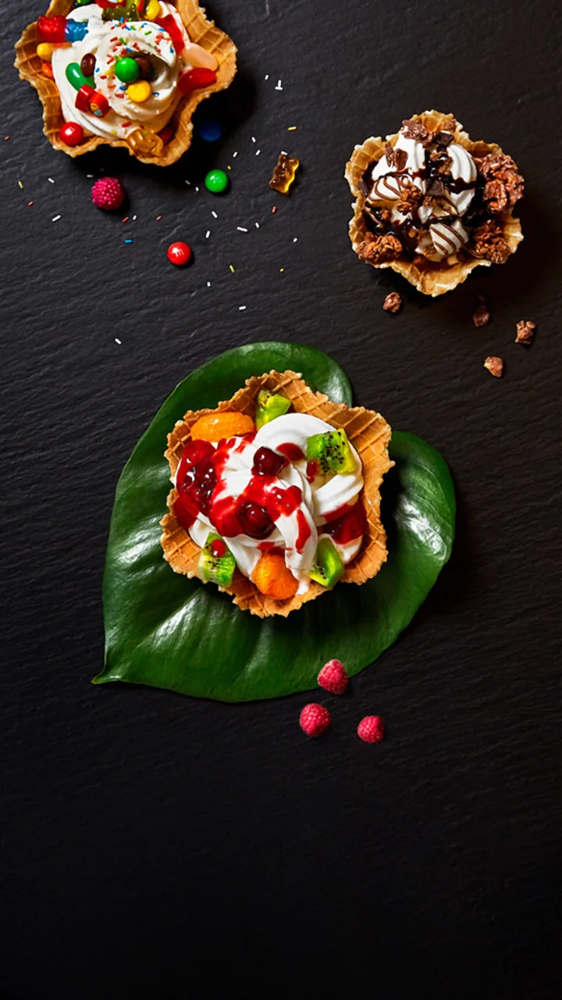
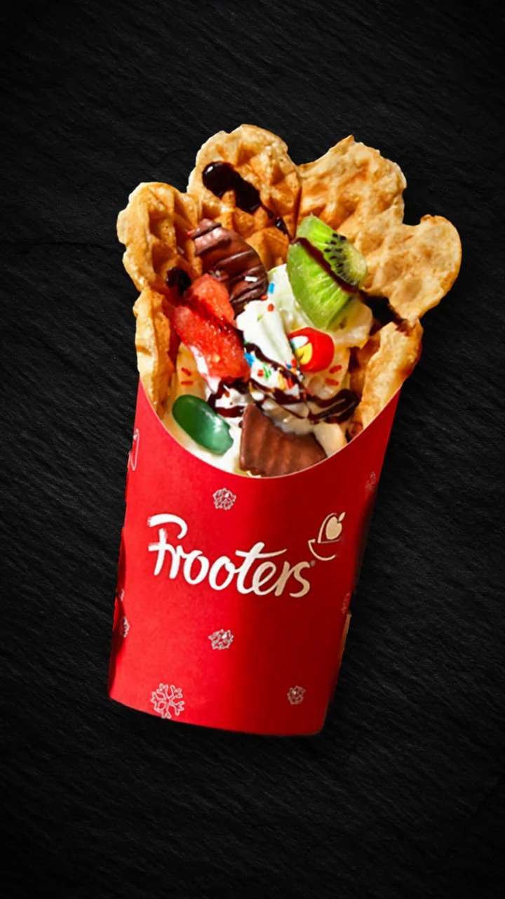
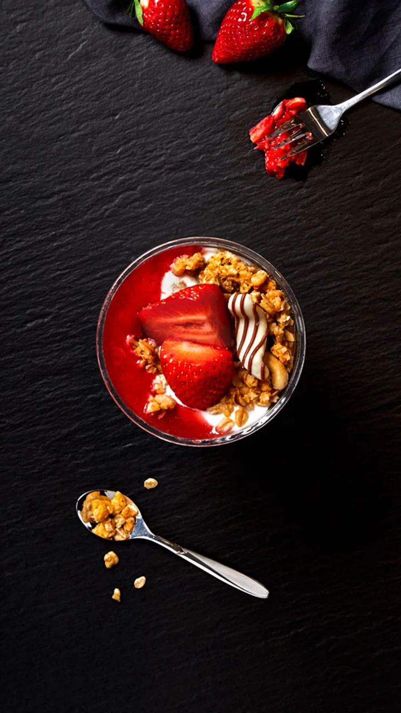
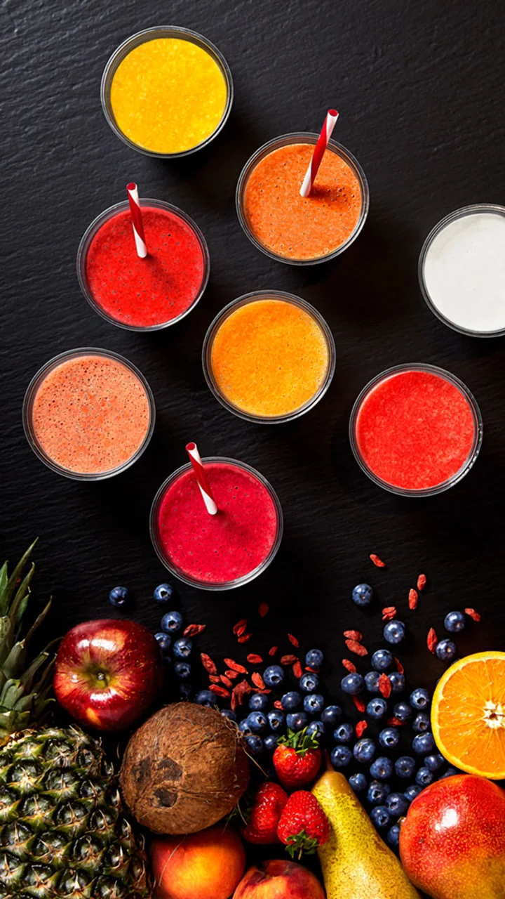
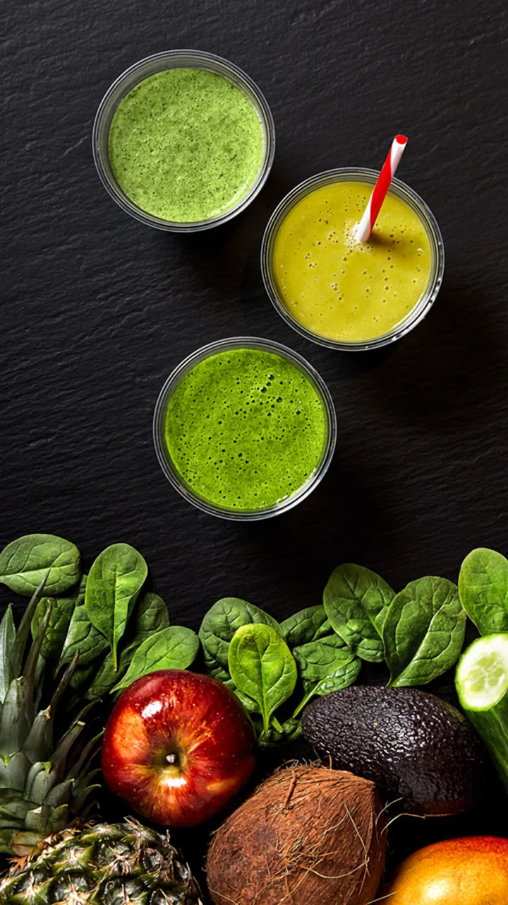
Noch mehr auf der Theke

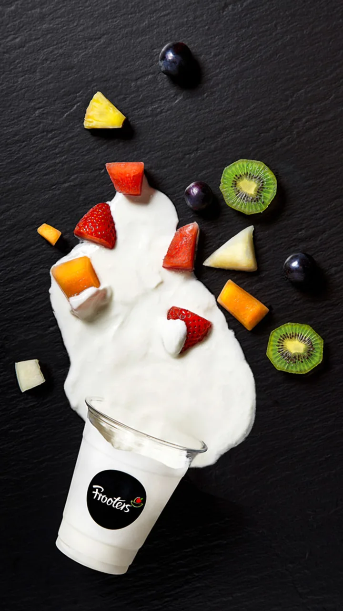

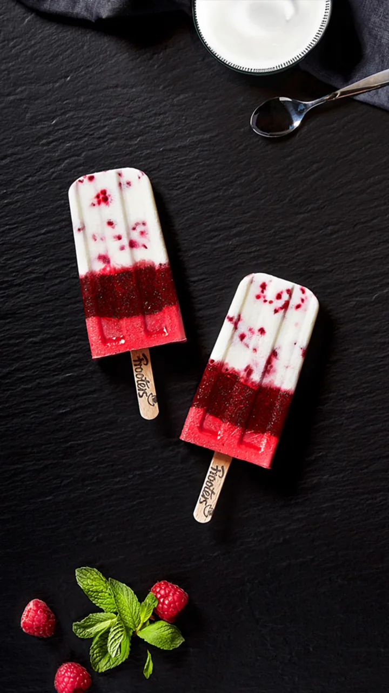

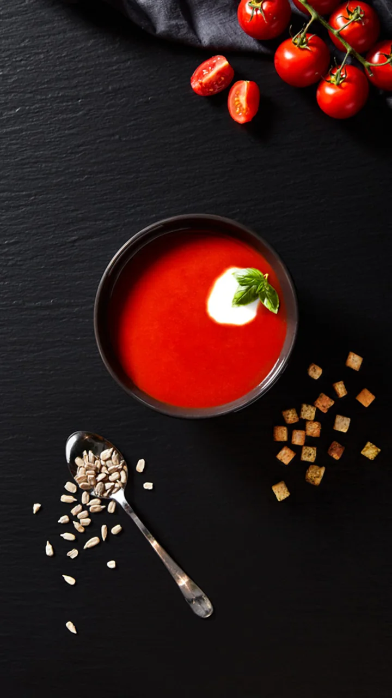
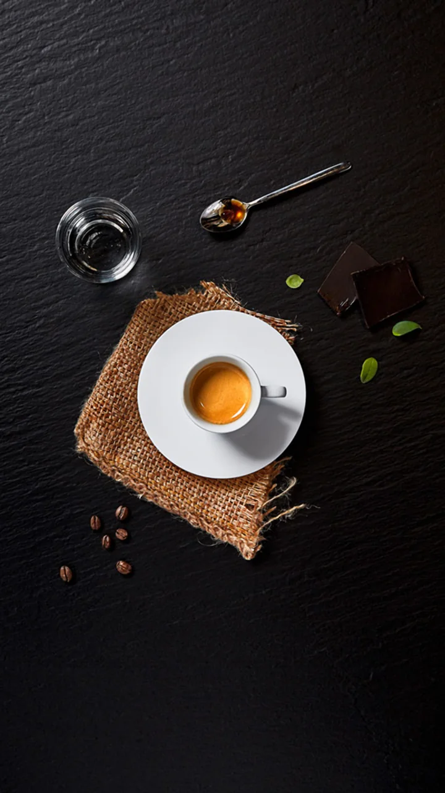
Ende der Theke
Und zu trinken?
Weiter unten wird frisch gemixt.
Weiter scrollenSmoothies und frisch gepresste Säfte
Frischgemixt.
Aus ganzen Früchten, jeden Tag frisch. Fahr über einen Becher und sieh, wie die Farbe aufsteigt.
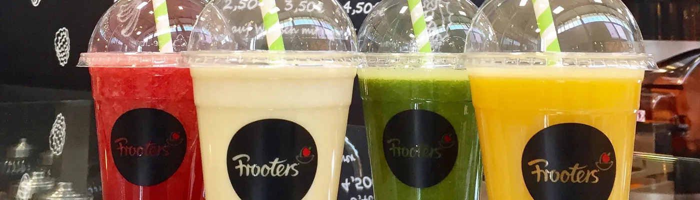
Hier findest du uns
Immer da, wogebummelt wird.
- OchtrupDesigner Outlet
- OberhausenWestfield Centro
- KemptenModehaus Reischmann
- MindenModehaus Hagemeyer
- SinsheimThermen & Badewelt
Nächster Raum · Die Terrasse
Pick Nick →Kaffee, belegte Brötchen und Waffeln. Die kleine Pause beim Einkaufen.
← Zurück zum Haus